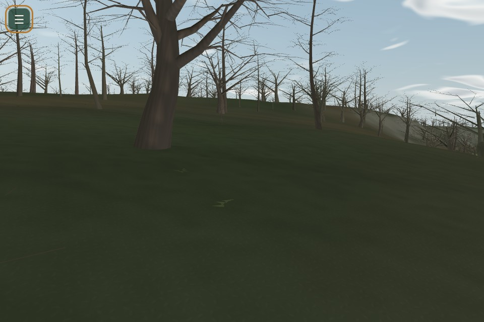
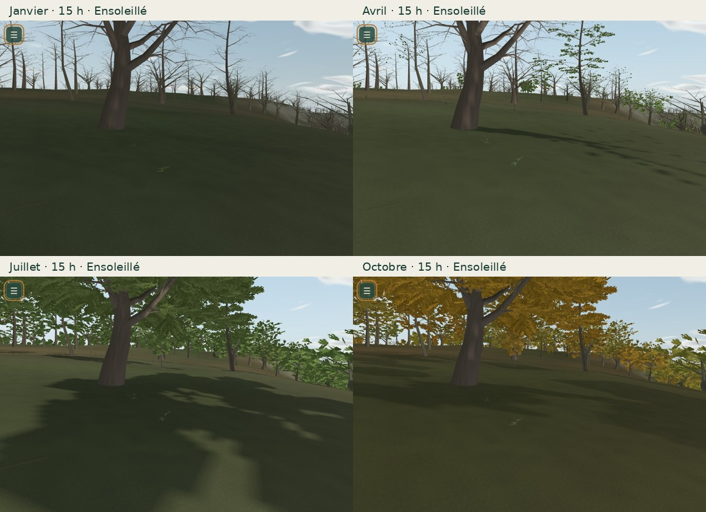
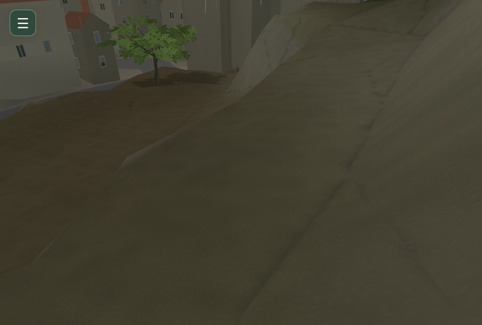
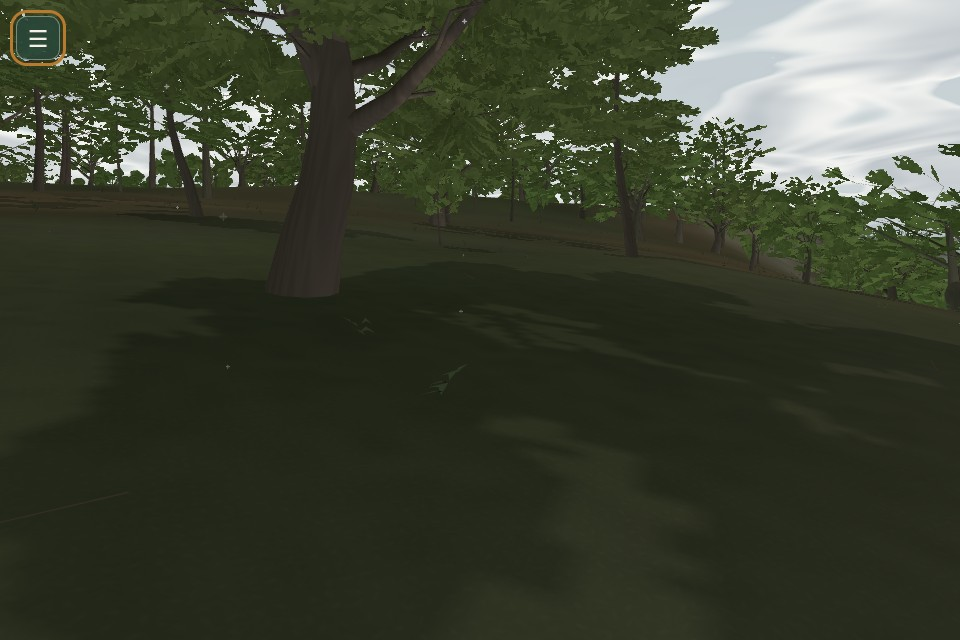
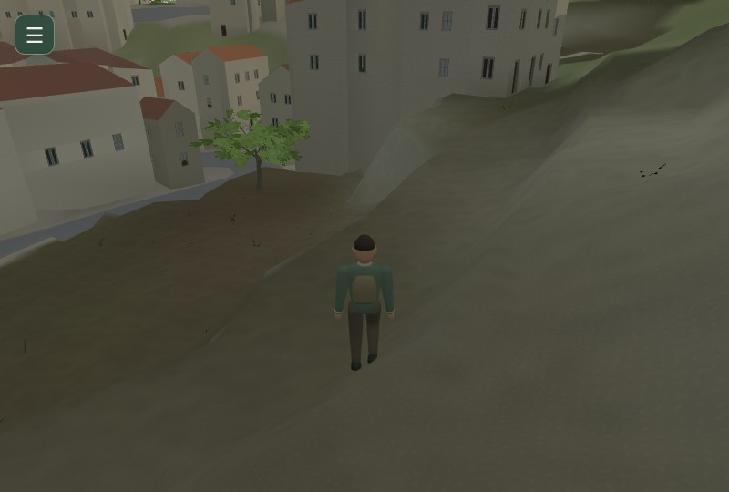
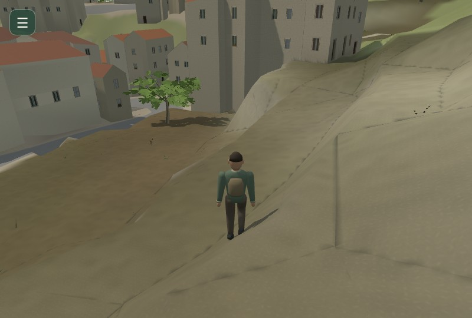
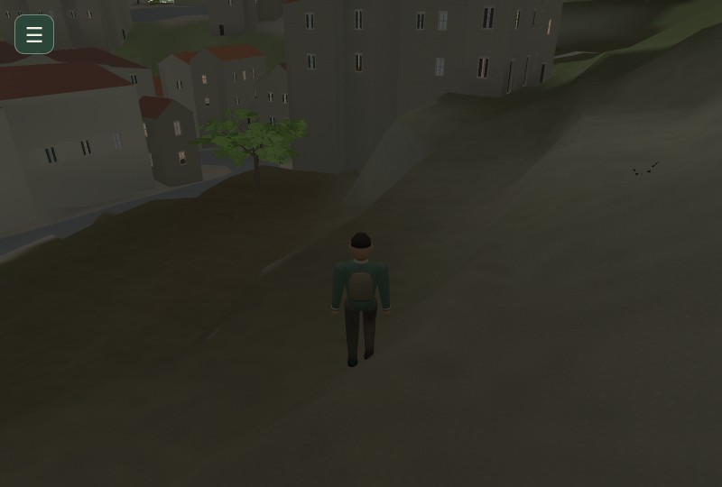
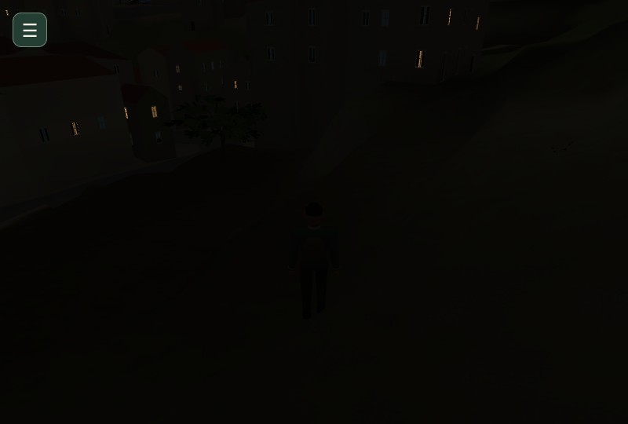
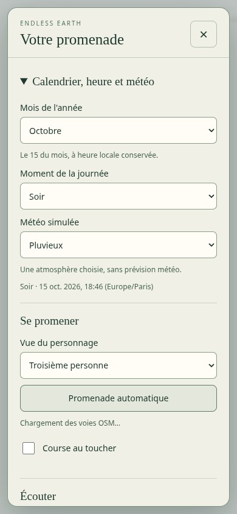
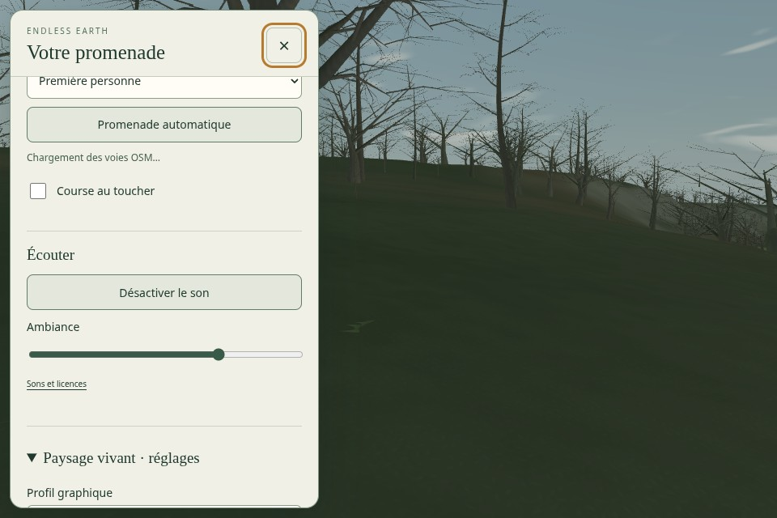

Une caméra, douze mois
Les captures proviennent du vrai jeu chargé avec ses données IGN et OSM. La caméra, le personnage, l’heure locale et la météo restent identiques. Le décalage UTC change avec l’heure légale.

hauteur du soleil
durée du jour
2026année de simulation
Janvier, avril, juillet, octobre

Le mois change la ramure et le soleil. La météo reste un choix séparé.
Matières, végétation et saisons
Les six stations permettent de regarder les mêmes surfaces sous quatre états saisonniers. Les classes géographiques sont conservées ; le relief physique reste identique.
La pluie et le calendrier restent indépendants

Pluie, humidité de surface et séchage partagent le propriétaire météo existant. Même scène, sans la réponse d’humidité : cette ablation garde le même ciel et les mêmes ombres.
Juillet avec Neigeux : une simulation volontaire, explicitement annoncée dans le menu. Aucune neige automatique en janvier.Le soleil, la ramure et le marcheur

Matin · soleil du mois sélectionné
Après-midi · soleil du mois sélectionné
Soir · soleil du mois sélectionné
Nuit · soleil du mois sélectionnéUn seul menu, aussi au toucher

Menu unifié existant, douze options et aucune palette permanente ajoutée au paysage. Viewport mobile émulé ; pas un essai sur téléphone physique.
Le choix du mois conserve l’heure locale et l’année simulée. Heure et météo se règlent séparément. Les choix persistent au rechargement.Mesures et comparaison avec Mission 17
Chromium / SwiftShader logiciel · 640 × 420 · dix rendus chauds synchronisés par cellule. Les cartes locales sont stabilisées. Il ne s’agit pas de FPS Android ou GPU physique.
| Vue | Profil | M17 ms | M18 ms | Variation |
|---|
| sous-bois | Éco | 182.5 | 191.1 | +4.7 % |
| sous-bois | Équilibré | 239.2 | 240.8 | +0.7 % |
| sous-bois | Qualité | 293.5 | 296.2 | +0.9 % |
| rue | Éco | 307.5 | 305.1 | -0.8 % |
| rue | Équilibré | 402.3 | 387.4 | -3.7 % |
| rue | Qualité | 404.1 | 420.1 | +4.0 % |
Échantillons et protocole · 36 combinaisons mois/profil · Égalité du graphe · Build compilé · Préservation des sources
 Mission 17 · base bad03f5
Mission 17 · base bad03f5 Mission 18 · mêmes caméra et climat
Mission 18 · mêmes caméra et climatPromenade native prolongée
606.1 s réelles · 674.4 m · 6891 images natives · cinq chapitres de calendrier et météo.
Extrait natif autour d’un changement de mois, sans déplacement imposé du joueur. Mesures et protocole · Trace compressée.